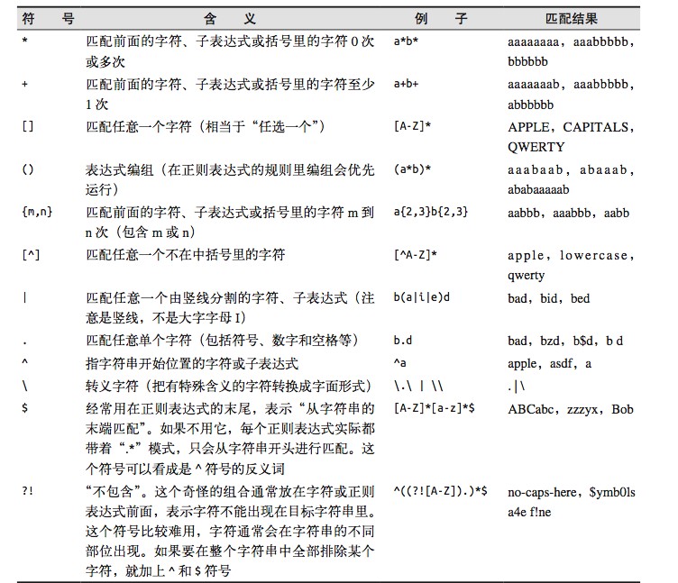

Scrapy是一个为了爬取网站数据，提取结构性数据而编写的应用框架。 可以应用在包括数据挖掘，信息处理或存储历史数据等一系列的程序中。
一个国人编写的强大的网络爬虫系统并带有强大的WebUI。采用Python语言编写，分布式架构，支持多种数据库后端，强大的WebUI支持脚本编辑器，任务监视器，项目管理器以及结果查看器。
C语言编写高效HTML/ XML处理库。支持XPath。
Beautiful Soup 是一个可以从HTML或XML文件中提取数据的Python库。
PyQuery库是jQuery的Python实现，可以用于解析HTML网页内容。
安装 pip install requests
requests.request发送一个http请求：
method：get/post/head/put/delete http的请求方法url：请求的目标地址params:请求的参数，这个参数是一个字典data：字典，字节流，或类文件句柄 要上传的数据，可以支持很多种数据格式json：上传的json数据headsers：自定义http头cookies：发送额外的cookies，可以使用这个格式发送一个字典格式的cookies，但需要说明的是，这个request接口默认会处理这个cookies，也就是你第一次发送的请求，如果应答里面包含有cookie的话，这个时候你再发请求的话，它会自动把第一次应答的cookie再发回给服务器，所以，不需要向我们的urllib里面去处理它。verify：是否检验证书，在Python里面，标准的做法是需要向证书检验，检查它是不是可信的机构发的，这个verify默认是true的，那对于一些自签名的证书，比如说我们的博客，那这个证书是自己给自己签名的，不是标准的公认的CA签名的，那这个时候可能我就不去检验这个证书了。requests.Response应答：
status_code状态码headers应答的http头json应答的json数据text应答的unicode编码的文本content应答的字节流数据cookies应答的cookies，自动处理访问一些网站可能有被服务器拒绝的情况，因此可以尝试模拟浏览器访问的方式。浏览器伪装是防屏蔽的方法之一，简言之，其原理就是在客户端在向服务端发送的请求中添加报头信息，告诉服务器“我是浏览器”。
headers = {'User-Agent':'Mozilla/5.0 (Windows NT 10.0; WOW64) AppleWebKit/537.36 (KHTML, like Gecko) '
'Chrome/51.0.2704.63 Safari/xixi234'}
r = requests.get(url, headers=headers)一些网站编码格式不是utf-8，text可能出现乱码，解决方法如下：
url = ""
r = requests.get(url)
text = r.text.encode(r.encoding).decode("gb2312")
抓取糗事百科数据
Python正则： http://www.cnblogs.com/huxi/archive/2010/07/04/1771073.html
Python爬虫： http://www.maiziedu.com/wiki/crawler/introduce/
书籍：
《Python网络数据采集》 点击下载 提取密码：mhgg